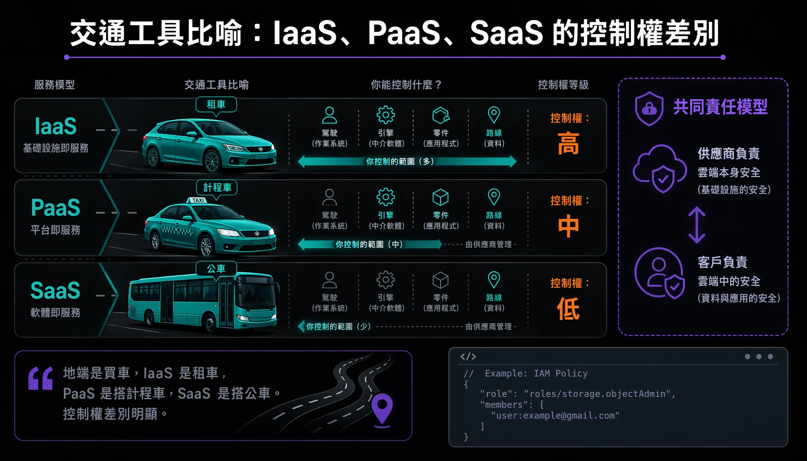

The Google Cloud track is one of the three tracks in the Google Digital Talent Exploration Program, at 11 courses. Its direction follows Cloud Digital Leader, focused on cloud application and business drivers, weighted towards the conceptual level. The audience spans business decision-makers without a technical background and technical people wanting an entry point, and several courses state outright that no technical experience is needed. This entry groups the courses into five clusters and pulls out the core concepts of each.
This is the third of three track records for the Google Digital Talent Exploration Program. The program overview sits in the overview entry, with the other two covering AI workplace literacy and digital marketing.

# What the Track Teaches
The track sets out to build comprehensive understanding of cloud computing, infrastructure, network security, data transformation, cloud AI, and cost governance alongside operational reliability. The courses carry scored knowledge assessments, and credit comes only from passing them. The related certification paths include Cloud Digital Leader (Scaling with Google Cloud Operations closes out that path) and Gen AI Leader (Generative AI: Understanding the Fundamentals is the second course of that certification). Completing the assessment for Cloud Computing Fundamentals earns four digital skill badges.
# One. Cloud Fundamentals and Infrastructure
This cluster covers what cloud is, how the three service models divide up, and Google Cloud's overall architecture along with its compute and storage options.
- Digital Transformation with Google Cloud — Defines digital transformation as using new technology to reshape business processes, culture and customer experience. The most concrete concepts are the six IT deployment approaches (on-premises, private cloud, public cloud, hybrid, multicloud) and the IaaS / PaaS / SaaS analogy of buying a car, renting a car, taking a taxi, taking a bus; plus the core financial shift of cost moving from capital expenditure to operating expenditure.
- Cloud Computing Fundamentals — The five characteristics of cloud (on-demand self-service, broad network access, resource pooling, rapid elasticity, measured service); three waves of technology, covering colocation, virtualisation, and fully automated elastic containerisation; Google Cloud's three-layer architecture; five compute options (Compute Engine, App Engine, Cloud Run functions, GKE, Cloud Run).
- Infrastructure and Application Modernization with Google Cloud — Fills in storage, APIs and security. Choosing among the five storage products (Cloud Storage, Cloud SQL, Spanner, Firestore, Bigtable); the four Cloud Storage classes; plus Google's five-layer security model, the shared responsibility model, four encryption options, and IAM least privilege.
# Two. Networking and Security
- Networking and Security in Google Cloud — A Virtual Private Cloud (VPC) is a global resource, while subnets sit at the regional level; two subnet modes (auto mode with an expansion ceiling, custom mode fully self-managed, and auto converts to custom one way only). Four hybrid connectivity options (Cloud VPN, Direct Peering, Dedicated and Partner Interconnect). Security and operations cover Cloud Armor for DDoS mitigation, Terraform for infrastructure as code, and the five capabilities of Cloud Observability.
# Three. Digital Transformation and Data Transformation
- Exploring Data Transformation with Google Cloud — Three data types (structured, semi-structured, unstructured, with the last accounting for 80–90% of new enterprise data while under 1% of it gets analysed); the division of labour across three data platforms (databases designed for access, the BigQuery data warehouse designed for analysis, data lakes holding raw data); the storage selection decision tree; the six stages of the data value chain and streaming analytics (Pub/Sub plus Dataflow), along with Looker's web-based BI.
# Four. AI on Cloud and Vertex AI
This cluster covers what AI and ML are, how Google Cloud lets people build models, and how Vertex AI Studio turns prompts into generative AI applications.
- Innovating with Google Cloud Artificial Intelligence — AI is the umbrella term and ML is a subset; the four classes of problem ML suits; four paths to a model running from fast to fully custom (BigQuery ML through SQL, pre-trained APIs used directly, AutoML with no code, custom training with the most flexibility); TPUs bringing the same computation down from 26 hours on GPU to 7.9 minutes.
- Generative AI: Understanding the Fundamentals — The hierarchy between AI and ML, along with the progression through deep learning, foundation models, LLMs and diffusion models (Gemini, Gemma, Imagen, Veo). The course also works through the six limitations of foundation models and the techniques for overcoming them, covering grounding, the three RAG stages, prompt engineering, fine-tuning and human-in-the-loop.
- Introduction to Vertex AI Studio — A single development environment running from prompt to production application. The three prompt elements (task, context, examples); zero-shot and few-shot; three model parameters (temperature, Top-K, Top-P); tuning levels from light to heavy (prompt design, parameter-efficient tuning, full fine-tuning).
# Five. Operations and Responsible AI
This cluster covers controlling cost after moving to cloud, holding reliability, running sustainably, and developing AI responsibly.
- Scaling with Google Cloud Operations — Cloud financial governance covers people, process and technology, usually managed centrally through a cloud centre of excellence. The resource hierarchy runs four levels (resource, project, folder, organisation), with inheritance delivering least privilege. The course also introduces SRE's four golden signals (latency, traffic, saturation, errors) and the hierarchy of SLI, SLO and SLA, with fully carbon-free energy by 2030 as the sustainability target.
- Responsible AI — The core idea is that responsible AI equals successful AI, stressing that decision authority stays with people and that human values enter at every stage of AI. Google's three pillars plus seven AI application objectives and four areas it will not pursue; problems get detected through a sequence of questions. Case study: after a celebrity recognition API was relabelled using a skin-tone scale, the false rejection rate for darker-skinned men turned out to approach 100%, with the root cause in the age distribution gap between the training set and the image library, corrected by expanding data across age ranges.
(The track also includes "Prompt Design in Agent Platform," a pure hands-on lab with no transcript material.)
# Three Things Worth Remembering
- The transport analogy for IaaS / PaaS / SaaS plus the shared responsibility model — On-premises is buying a car, IaaS is renting one, PaaS is taking a taxi, SaaS is taking a bus, and that one line settles the difference in control across the three service models. Then the shared responsibility model follows: security of the cloud belongs to the provider, security in the cloud belongs to the customer, and the customer is always responsible for their own data.
- Google Cloud's storage selection decision tree — Picking the right product for the situation is a hard measure of cloud literacy: unstructured goes to Cloud Storage; transactional with SQL goes to Cloud SQL or Spanner; transactional without SQL goes to Firestore; analytical with SQL goes to BigQuery; analytical NoSQL goes to Bigtable.
- Vertex AI's four paths to a model plus grounding and RAG for generative AI — The four-step ladder (BigQuery ML, pre-trained APIs, AutoML, custom training) rises in both barrier and customisation; the hallucination pain point of generative AI gets handled by grounding and the three RAG stages, anchoring answers to verifiable sources. TPUs bringing the same computation from 26 hours down to 7.9 minutes works well as the headline figure.